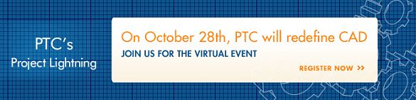

25 yýl önce piyasaya sunduðu ve devrim niteliðinde olan CAD teknolojilerine 20 yýldýr yön veren, CAD ve PLM sektörünün lideri PTC, 28 Ekim 2010 günü tüm dünyaya ayný anda sunacaðý vizyon, strateji ve teknoloji tanýtýmý ile, önümüzdeki yýllara yön verecek, CAD teknolojisini yeniden tanýmlýyor.
Ülkemizi 21 yýl önce ilk CAD/CAM teknolojileri ile tanýþtýran ve bugüne kadar geliþimine önemli katkýlar saðlayan bir kuruluþ olarak; ülkemiz endüstri ve imalat sektörünün rekabetçi gücüne çok önemli katkýlar saðlayacaðýna inandýðýmýz, devrim niteliðindeki bu yeni teknoloji tanýtýmýyla ilgili etkinlik konusunda sizleri bilgilendirmeyi görev kabul ediyoruz.
Tüm dünyada ayný anda internet üzerinden canlý yayýnlanacak ve CAD teknolojilerindeki temel sorunlara köklü çözümler getiren "Project Lightning" vizyon ve teknoloji tanýtýmý BUGÜN, 28 Ekim 2010, Perþembe günü, 17:00 – 19:00 saatleri arasýnda gerçekleþtirilecektir.
Henüz kayýt yaptýrmamýþ olanlar, Project Lightning Kayýt Formu doldurduktan sonra kendilerine gelecek cevap mailindeki linki veya aþaðýdaki linkten yayýn saatinde giriþ yaparak izleyebileceklerdir.
Kaydýný yaptýrmýþ olanlar, yayýn saatinde aþaðýdaki linklerden biriyle giriþ yapabileceklerdir:
Önemli notlar:
- Kayýt süresi 28 Ekim 2010 TSÝ 16:30’da dolacaktýr.
- Etkinlik TSÝ 17:00’de baþlayacak ve 2 saat sürecektir.
- Kayýtla ilgili sorularýnýz için Project-Lightning@ptc.com adresine e-posta gönderebilirsiniz.
- Twitter’dan #projectlightning üzerinden takip edebilirsiniz.
| Minimum Sistem Gereklilikleri |
Windows
- Windows 2000 or XP, Vista, or Windows 7
- Internet Explorer 6.0 or higher
- Firefox 2 or higher
- Google Chrome 6.0 or higher
- Flash Player 9.0 or higher
- JavaScript Enabled
|
Macintosh
- OS X 10.2 or higher
- Firefox 2 or higher
- Google Chrome 6.0 or higher
- Flash Player 9.0 or higher
- JavaScript Enabled
|
Saygýlarýmýzla,
ÝNFOMA GROUP | ÝNFORMATÝK A.Þ.

 |